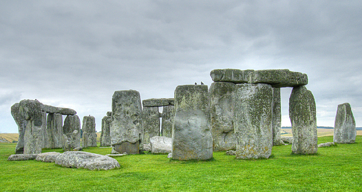

4.4 The Calendar
Learning Objectives
By the end of this section, you will be able to:
- Understand how calendars varied among different cultures
- Explain the origins of our modern calendar
“What’s today’s date?” is one of the most common questions you can ask (usually when signing a document or worrying about whether you should have started studying for your next astronomy exam). Long before the era of digital watches, smartphones, and fitness bands that tell the date, people used calendars to help measure the passage of time.
The Challenge of the Calendar
There are two traditional functions of any calendar. First, it must keep track of time over the course of long spans, allowing people to anticipate the cycle of the seasons and to honor special religious or personal anniversaries. Second, to be useful to a large number of people, a calendar must use natural time intervals that everyone can agree on—those defined by the motions of Earth, the Moon, and sometimes even the planets. The natural units of our calendar are the day, based on the period of rotation of Earth; the month, based on the cycle of the Moon’s phases (see later in this chapter) about Earth; and the year, based on the period of revolution of Earth about the Sun. Difficulties have resulted from the fact that these three periods are not commensurable; that’s a fancy way of saying that one does not divide evenly into any of the others.
The rotation period of Earth is, by definition, 1.0000 day (and here the solar day is used, since that is the basis of human experience). The period required by the Moon to complete its cycle of phases, called the month, is 29.5306 days. The basic period of revolution of Earth, called the tropical year, is 365.2422 days. The ratios of these numbers are not convenient for calculations. This is the historic challenge of the calendar, dealt with in various ways by different cultures.
Early Calendars
Even the earliest cultures were concerned with the keeping of time and the calendar. Some interesting examples include monuments left by Bronze Age people in northwestern Europe, especially the British Isles. The best preserved of the monuments is Stonehenge, about 13 kilometers from Salisbury in southwest England (Figure 4.12). It is a complex array of stones, ditches, and holes arranged in concentric circles. Carbon dating and other studies show that Stonehenge was built during three periods ranging from about 2800 to 1500 BCE. Some of the stones are aligned with the directions of the Sun and Moon during their risings and settings at critical times of the year (such as the summer and winter solstices), and it is generally believed that at least one function of the monument was connected with the keeping of a calendar.

Figure 4.12. The ancient monument known as Stonehenge was used to keep track of the motions of the Sun and Moon. (credit: modification of work by Adriano Aurelio Araujo)
The Maya in Central America, who thrived more than a thousand years ago, were also concerned with the keeping of time. Their calendar was as sophisticated as, and perhaps more complex than, contemporary calendars in Europe. The Maya did not attempt to correlate their calendar accurately with the length of the year or lunar month. Rather, their calendar was a system for keeping track of the passage of days and for counting time far into the past or future. Among other purposes, it was useful for predicting astronomical events, such as the position of Venus in the sky (Figure 4.13).
Figure 4.13. This Mayan observatory at Chichen Itza in the Yucatan, Mexico, dates from around the year 1000. (credit: “wiredtourist.com”/Flickr)
The ancient Chinese developed an especially complex calendar, largely limited to a few privileged hereditary court astronomer-astrologers. In addition to the motions of Earth and the Moon, they were able to fit in the approximately 12-year cycle of Jupiter, which was central to their system of astrology. The Chinese still preserve some aspects of this system in their cycle of 12 “years”—the Year of the Dragon, the Year of the Pig, and so on—that are defined by the position of Jupiter in the zodiac.
Our Western calendar derives from a long history of timekeeping beginning with the Sumerians, dating back to at least the second millennium BCE, and continuing with the Egyptians and the Greeks around the eighth century BCE. These calendars led, eventually, to the Julian calendar, introduced by Julius Caesar, which approximated the year at 365.25 days, fairly close to the actual value of 365.2422. The Romans achieved this approximation by declaring years to have 365 days each, with the exception of every fourth year. The leap year was to have one extra day, bringing its length to 366 days, and thus making the average length of the year in the Julian calendar 365.25 days.
In this calendar, the Romans had dropped the almost impossible task of trying to base their calendar on the Moon as well as the Sun, although a vestige of older lunar systems can be seen in the fact that our months have an average length of about 30 days. However, lunar calendars remained in use in other cultures, and Islamic calendars, for example, are still primarily lunar rather than solar.
The Gregorian Calendar
Although the Julian calendar (which was adopted by the early Christian Church) represented a great advance, its average year still differed from the true year by about 11 minutes, an amount that accumulates over the centuries to an appreciable error. By 1582, that 11 minutes per year had added up to the point where the first day of spring was occurring on March 11, instead of March 21. If the trend were allowed to continue, eventually the Christian celebration of Easter would be occurring in early winter. Pope Gregory XIII, a contemporary of Galileo, felt it necessary to institute further calendar reform.
The Gregorian calendar reform consisted of two steps. First, 10 days had to be dropped out of the calendar to bring the vernal equinox back to March 21; by proclamation, the day following October 4, 1582, became October 15. The second feature of the new Gregorian calendar was a change in the rule for leap year, making the average length of the year more closely approximate the tropical year. Gregory decreed that three of every four century years—all leap years under the Julian calendar—would be common years henceforth. The rule was that only century years divisible by 400 would be leap years. Thus, 1700, 1800, and 1900—all divisible by 4 but not by 400—were not leap years in the Gregorian calendar. On the other hand, the years 1600 and 2000, both divisible by 400, were leap years. The average length of this Gregorian year, 365.2425 mean solar days, is correct to about 1 day in 3300 years.
The Catholic countries immediately put the Gregorian reform into effect, but countries of the Eastern Church and most Protestant countries did not adopt it until much later. It was 1752 when England and the American colonies finally made the change. By parliamentary decree, September 2, 1752, was followed by September 14. Although special laws were passed to prevent such abuses as landlords collecting a full month’s rent for September, there were still riots, and people demanded their 12 days back. Russia did not abandon the Julian calendar until the time of the Bolshevik revolution. The Russians then had to omit 13 days to come into step with the rest of the world. The anniversary of the October Revolution (old calendar) of 1917, bringing the communists to power, thus ended up being celebrated in November (new calendar), a difference that is perhaps not so important since the fall of communism.
Key Concepts and Summary
The fundamental problem of the calendar is to reconcile the incommensurable lengths of the day, month, and year. Most modern calendars, beginning with the Roman (Julian) calendar of the first century BCE, neglect the problem of the month and concentrate on achieving the correct number of days in a year by using such conventions as the leap year. Today, most of the world has adopted the Gregorian calendar established in 1582 while finding ways to coexist with the older lunar calendars’ system of months.
Source: Andrew Fraknoi, David Morrison, Sidney C. Wolff Astronomy 2e, OpenStax, 2022. Licensed under CC BY-NC-SA 4.0. Converted to Markdown; text unchanged, interactive embeds omitted.